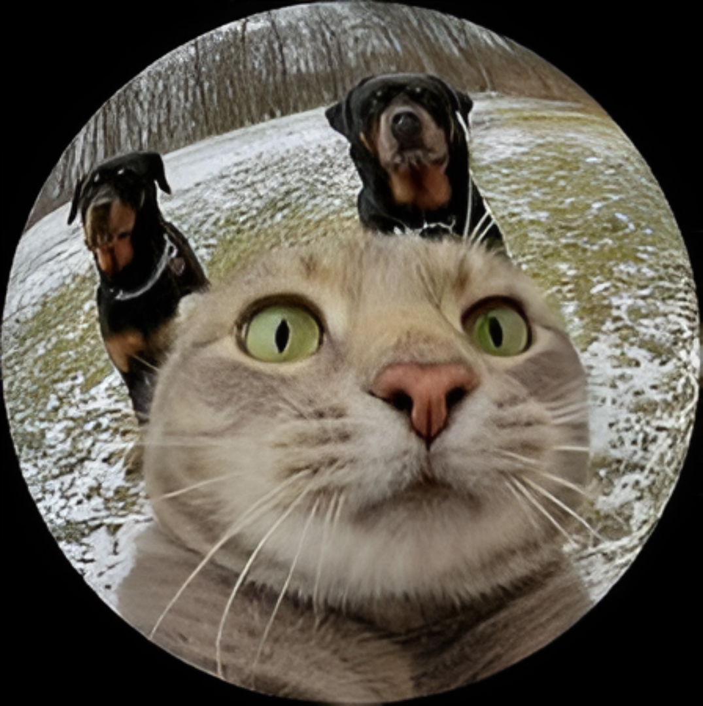
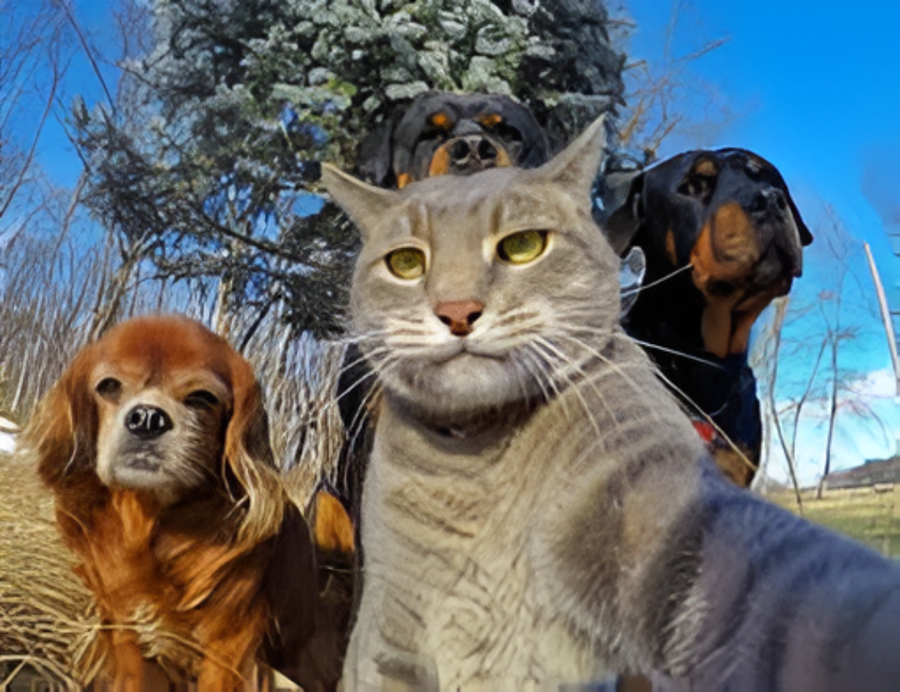
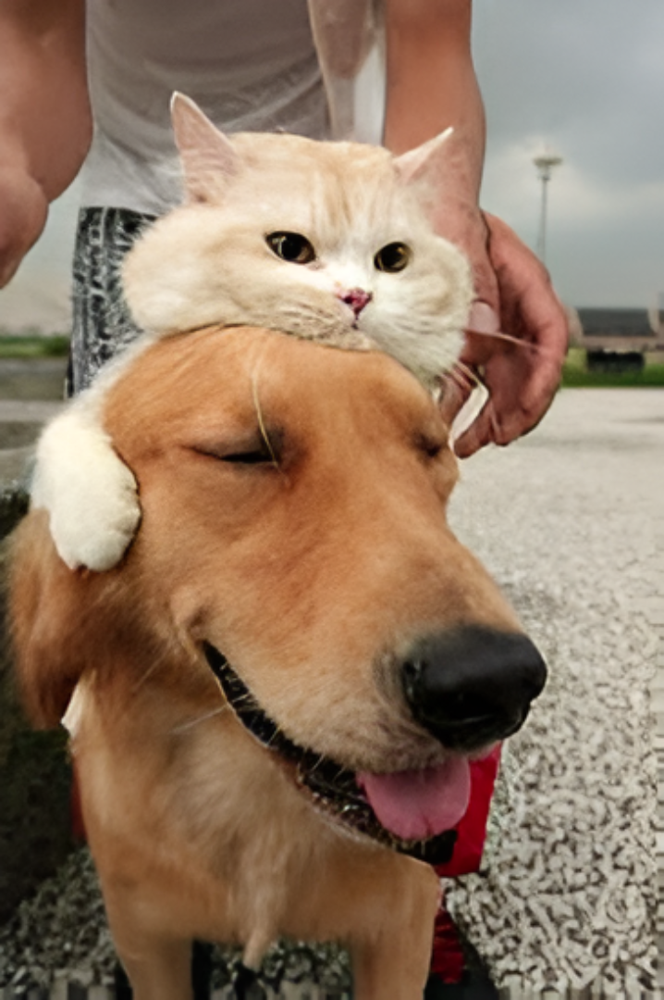
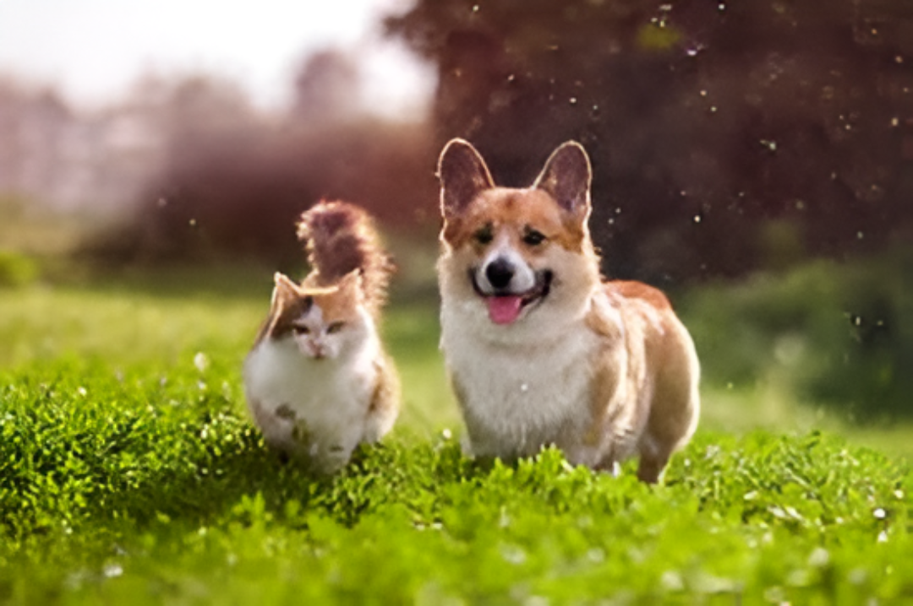

Find Your New Best Friend.
Open your heart and home to a rescue animal. We connect loving families with pets who need a second chance.


It's More Than Adoption. It's Love.
Every animal deserves a safe and loving home. Our process is simple and supportive, ensuring you and your new companion are a perfect match for a lifetime of happiness.

Be a Part of Their Story.
Don't have room for a new pet? You can still make a huge difference. Volunteer your time or donate to help us provide food, shelter, and medical care for animals in need.

Read Our "Happy Tails".
"We adopted Daisy last year, and she has brought so much joy into our lives. The process was so easy, and the team at Paws & Whiskers was incredibly supportive. We can't imagine our family without her!"